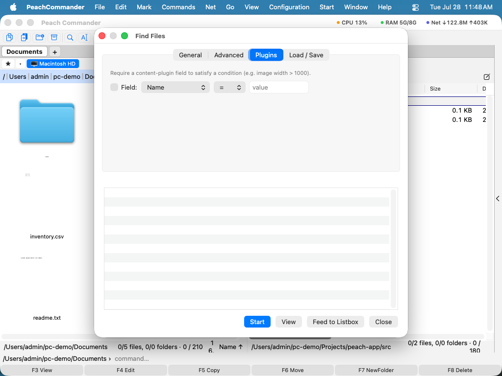

Rechercher des fichiers
Lorsque vous devez retrouver des fichiers n'importe où sur votre Mac — par nom, par ce qu'ils contiennent, ou par taille et date —, utilisez la fenêtre Rechercher des fichiers. Elle explore un ou plusieurs dossiers (et leurs sous-dossiers), peut regarder à l'intérieur des fichiers texte et des archives, et vous permet d'envoyer directement tout ce qu'elle trouve dans un panneau, afin que vous puissiez agir sur les résultats comme s'il s'agissait d'un dossier ordinaire.
Rechercher des fichiers par nom
- Dans le panneau affichant le dossier que vous souhaitez explorer, choisissez Commandes > Rechercher des fichiers… (ou appuyez sur Cmd+Shift+F).
- Dans l'onglet Général, saisissez un motif de nom dans Rechercher. Vous pouvez utiliser des caractères génériques tels que
*.pdfoureport_*.docx. Pour explorer plusieurs dossiers à la fois, indiquez-les dans le champ du dossier de départ, séparés par un point-virgule (;). - Cliquez sur Démarrer. Les correspondances apparaissent dans la liste de résultats ci-dessous au fur et à mesure qu'elles sont trouvées.
- Double-cliquez sur un résultat pour accéder à ce fichier dans le panneau actif, ou sélectionnez un résultat et cliquez sur Afficher (F3) pour l'ouvrir dans le visualiseur intégré.
 (Figure : l'onglet Général — rechercher par motif de nom dans un ou plusieurs dossiers.)
(Figure : l'onglet Général — rechercher par motif de nom dans un ou plusieurs dossiers.)
Rechercher par contenu, taille et date
- Pour rechercher à l'intérieur des fichiers, saisissez le texte dans Rechercher le texte dans l'onglet Général — ce qui figure dans ce champ est recherché, un champ vide ne recherche que les noms. Des options vous permettent de le rendre Sensible à la casse, de ne faire correspondre qu'un Mot entier, de traiter le texte comme une Expression régulière, d'effectuer une Recherche de contenu hexadécimal, ou de trouver les fichiers Ne contenant pas le texte.
- Passez à l'onglet Avancé pour restreindre les résultats par Taille (par exemple de
10Kà5M), par plage de date de modification, ou aux fichiers modifiés au cours des N derniers jours. - Activez Rechercher dans les archives pour regarder à l'intérieur des archives de la famille zip (zip, jar, war et similaires).
- Pour limiter la recherche à ce que vous avez déjà choisi, activez Rechercher uniquement dans les éléments sélectionnés avant de démarrer.
- Activez Rechercher aussi dans les commentaires de fichier et le texte est cherché dans le commentaire de chaque fichier en plus de son contenu. C'est ainsi que l'on retrouve un fichier par ce qu'on a écrit à son sujet — « l'original du client », « remplacé par l'export 2026 » — quand rien de tel n'apparaît dans le fichier. Un résultat trouvé ainsi affiche le commentaire au lieu d'une ligne du fichier, et aucun numéro de ligne, puisque la correspondance n'est pas dans le texte du fichier. La casse, le mot entier et les expressions régulières s'appliquent au commentaire exactement comme au contenu ; une recherche hexadécimale non, un commentaire étant du texte saisi. Ne contenant pas reste cohérent : un fichier est listé quand le texte n'est ni dans son contenu ni dans son commentaire. Si le module Notes est activé, sa note est disponible comme champ de contenu, sur lequel vous pouvez filtrer sous Plugins — voir Travailler avec les modules.
- Certains plugins savent transformer un fichier en un texte que le fichier ne contient pas — le plugin de décompilation transforme un
.classen source Java. Activez Rechercher dans le texte fourni par les plugins et ces fichiers sont cherchés en tant que ce texte, non plus comme leurs propres octets : une phrase du source se retrouve ainsi dans une classe compilée. L’option n’apparaît que si un tel plugin est installé, et elle est plus lente : produire le texte peut lancer un décompilateur pour chaque fichier.
 (Figure : l'onglet Avancé — filtrer par taille, date et autres attributs.)
(Figure : l'onglet Avancé — filtrer par taille, date et autres attributs.)
Si vous avez des extensions qui ajoutent des champs de contenu (comme les dimensions d'une image), l'onglet Extensions vous permet d'exiger qu'un champ satisfasse une condition — par exemple, uniquement les images de plus de 1000 pixels de large.

(Figure : l'onglet Extensions — faire correspondre sur des champs de contenu fournis par une extension.)Recherches rapides avec Spotlight
Pour les dossiers locaux que macOS a déjà indexés, activez Utiliser Spotlight dans l'onglet Général pour des résultats quasi instantanés. Spotlight interroge l'index au lieu de parcourir les fichiers : il ignore donc les expressions régulières, les limites de profondeur des sous-dossiers et la portée « sélection uniquement ».
Réutiliser et transmettre vos résultats
- Envoyer dans la liste place chaque résultat dans le panneau actif sous forme de liste temporaire, afin que vous puissiez copier, déplacer ou supprimer l'ensemble d'un coup.
- Dans l'onglet Charger / Enregistrer, choisissez Enregistrer comme modèle… pour conserver la recherche actuelle (motifs et options) et la reprendre plus tard dans la liste des modèles.
- Rechercher et Rechercher le texte mémorisent chacun les 20 dernières entrées utilisées, la plus récente en premier : cliquez sur la flèche au bout du champ pour en reprendre une. Un terme utilisé deux fois remonte en tête au lieu d'apparaître en double, et les listes survivent à la fermeture de la fenêtre comme à la sortie de l'app. Effacer l'historique… dans l'onglet Charger / Enregistrer les oublie toutes les deux ; les modèles enregistrés ne sont pas touchés.
Raccourcis
| Action | Raccourci |
|---|---|
| Ouvrir Rechercher des fichiers | Cmd+Shift+F ou Option+F7 |
| Démarrer / arrêter la recherche | Bouton Démarrer dans la fenêtre |
| Afficher le résultat sélectionné | F3 |
Remarques
- La recherche de contenu lit les fichiers entiers pour les dossiers locaux ; sur les autres emplacements, les fichiers très volumineux sont ignorés (environ 16 Mo, ou 64 Mo avec une expression régulière).
- La recherche à l'intérieur des archives descend jusqu'à quatre niveaux d'archives imbriquées.
- Inclure les dossiers dans les résultats répertorie aussi les dossiers dont le nom correspond, pas seulement les fichiers.
- Spotlight ne couvre que les dossiers locaux indexés ; pour les emplacements réseau ou la correspondance par motif, laissez-le désactivé et laissez Rechercher des fichiers parcourir.